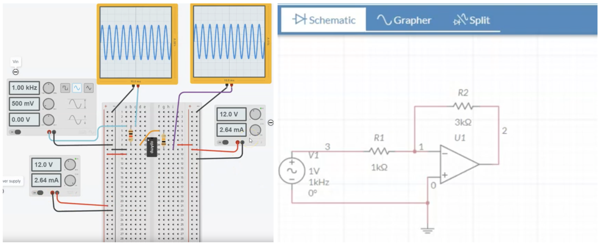
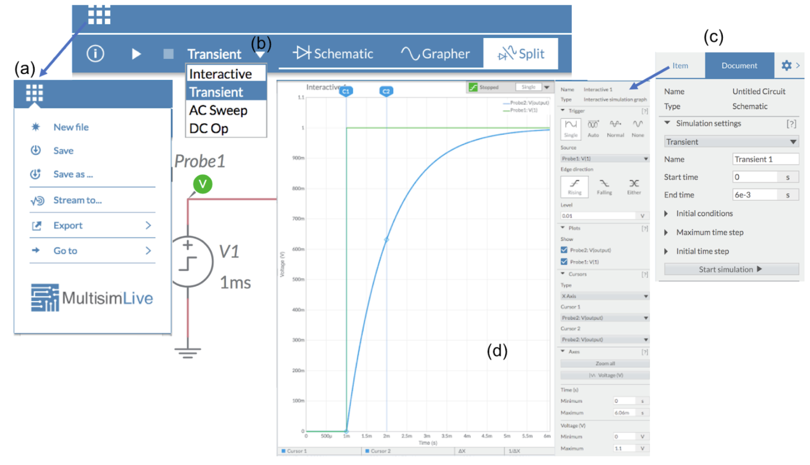
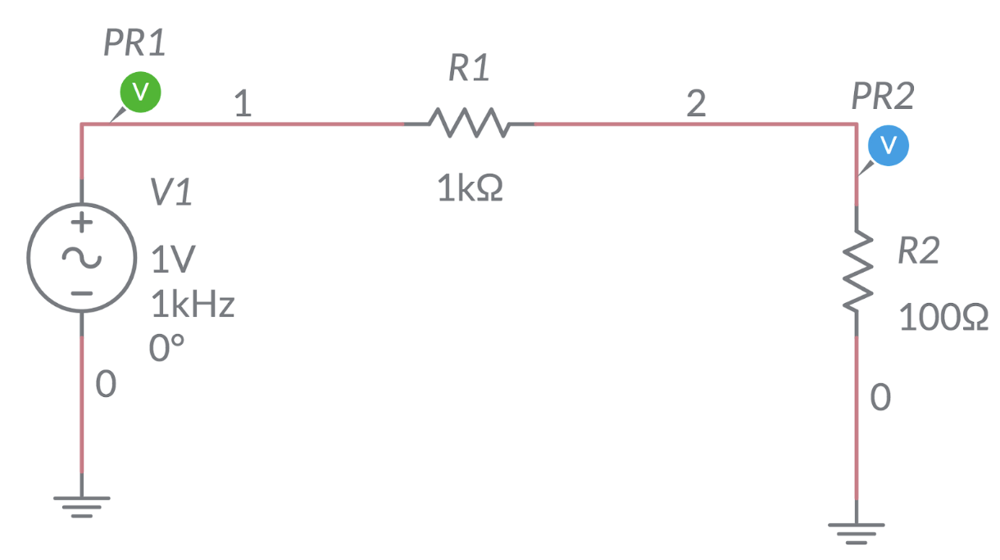
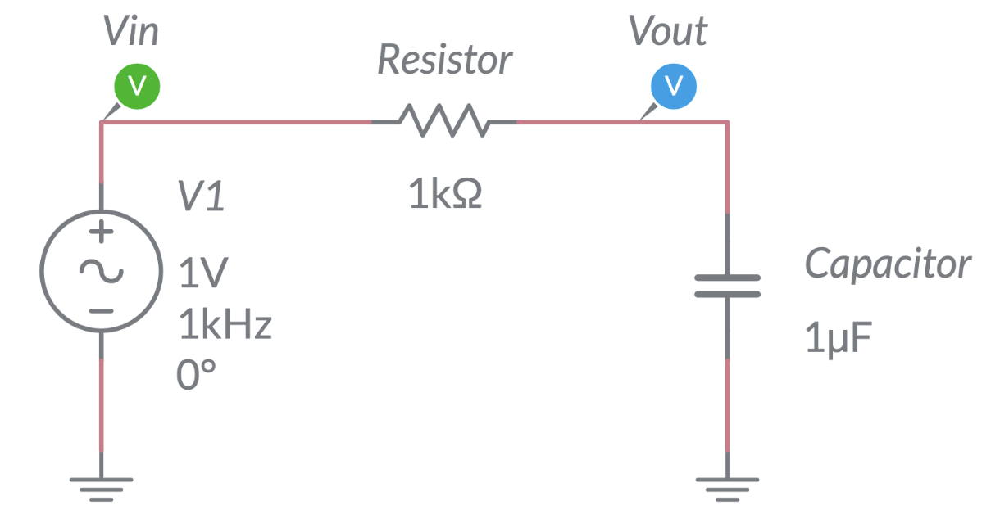
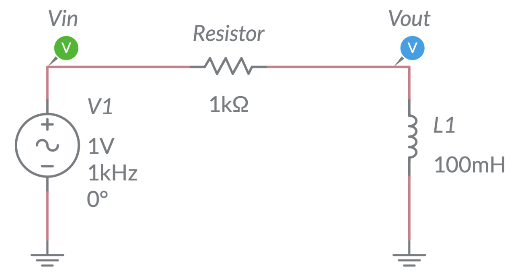
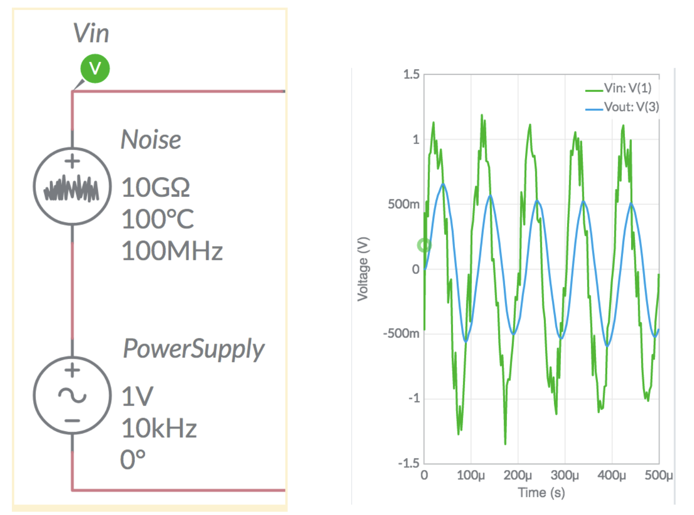
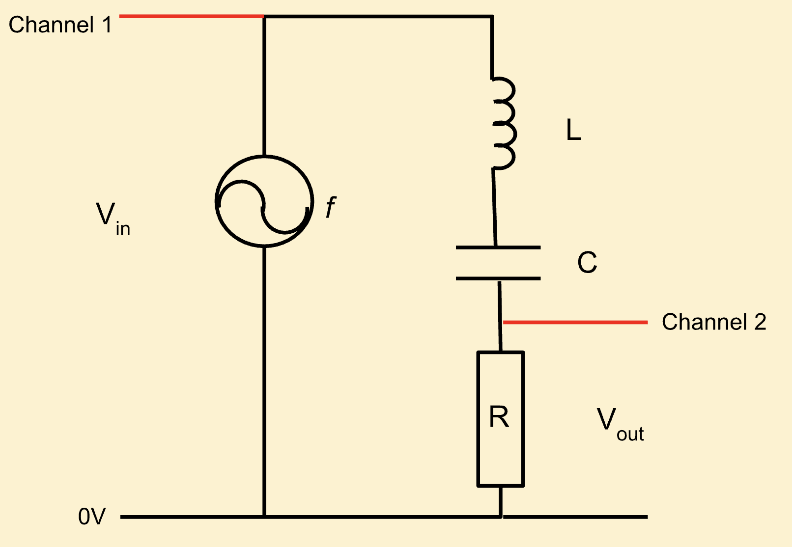

Simulating AC Circuits#
Many professionals and hobbyists use electrical circuit simulators to design and test electrical projects. These simulators use mathematical models to replicate the behaviour of electrical components. The benefit here is that simple and complex circuits can be tested quickly before purchasing and assembling the physical components. The simulators can provide actual data such as time, voltage, current, and frequency response.
These applications are typically available for free and many can be run online. In terms of their interface, there are two main types:
Circuit schematic interface such as:
MultiSim: uses SPICE, includes easy to use oscilloscope grapher.
Partsim : also uses SPICE, see tutorial here.
Virtual breadboard interface such as:
Tinkercad Circuits: Easy to use online, can include arduino interface.
Fritzing: Free to download, more for design of circuits and hardware.
The two options we recommend you to try are MultiSim and Tinkercad. A nice comparison are these tutorials (MultiSim, TinkerCad) building an amplifier circuit. A visual comparison is shown in the image below.

Tinkercad is fun and mimics building a real circuit but it cannot provide detailed data. For example, the oscilloscopes in Tinkercad are restricted to a single channel and do not export data. MultiSim on the other hand is more technically advanced but does not develop real circuit building skills. Both tools complement each other, so use them in tandem.
MultiSim#
The simulations in MultiSim produce data. This data can be downloaded and analysed later using the menu as shown in the figure below. MultiSim also provides four types of simulations including a frequency response (AC sweep). There is also a practical oscilloscope for detailed triggering and measurements.

The figure above shows the main interface of MultiSim:
(a) File management is via top left menu.
(b) There are four simulation types.
(c) Click on the cog symbol and then “Document” to set the simulation parameters such as end time.
(d) The grapher is an oscilloscope.
Here, a single trigger is used to capture the charging of a capacitor in response to an input step voltage. As per a real oscilloscope, the cursors can be used to determine accurate measurements. Here, the rise time for a capacitor is measured, \(\Delta x \approx 1\,ms\), using the cursors labelled C1 and C2.
The full downloadable version of MultiSim is part of the National Instruments labview package. This is available while using LabView on campus. The free online version will be used in this workshop - it has sufficient functionality for most circuits.
What is a frequency sweep?#
A frequency sweep is the process of varying the AC frequency over a wide range of values. We can then measure how the circuit responds to each frequency and use this data to understand its frequency response. For example, will the circuit block high frequency current or is there a specific frequency where the current is maximum?
MultiSim can perform a frequency sweep by varying the power supply frequency over some large range. As we vary the frequency that current is being pushed into the circuit, we should discover a resonance.
On the sweep settings, you canchange the sweep configuration to focus around the area of interest. For example:
Set the frequency near the predicted resonant frequency
Increase the number of frequency point
Change Decade to linear
Change Vertical scale to linear
If needed, save the data for frequency and \(V_{out}\) to file via the export menu in MultiSim. Rename the file to contain information on the LCR values. Note that data is stored in a .csv file. This is a simple text file which you can directly load into the analysis software.
When observing the data on the grapher in MultiSim, we can also perform some basic measurements. For example we can measure the resonant frequency and bandwidth using the cursors in MultiSim’s Grapher window. We can also observe the effect of varying the damping in the system via the value of resistance \(R\).
Activities#
In the lab you will build and take measurements of various AC circuits. You will then make comparisons between your measurements and the data obtained by simulating these circuits in MultiSim.
Warning
Please aim to complete activities 1, 2, 3 and 4 in the workshop. Completion of these activities is required for your work in the experimental labs.
Ensure that you record written notes on all you do. These lab book notes will form evidence of learning outcomes in your portfolio. Additionally, record screen shots of the virtual circuits and export data to csv format. You could even record a video (i.e. a screencast) of your circuit building to evidence in your portfolio. If you choose to write up this experiment for your final lab report, your written lab notes will be useful.
1. Resistor Response#
Build the resistor test circuit shown below in MultiSim.

Run an interactive or transient simulation and stop after a few cycles.
Set the oscilloscope to trigger on \(V_{in}\). Sketch the time based response of \(V_{out}\) and \(V_{in}\). Your data should confirm that the resistor component does not introduce any phase change. Capture and save the data for a few cycles.
Test the frequency response of the circit. This will provide \(V_{out}(f)\) and phase \(\Phi(f)\). Select AC sweep and run the simulations. Make a sketch of the frequency and phase response in your lab book. As this is a resistor we do not expect any variation.
2. Capacitor Response#
Build the capacitor test circuit shown below in MultiSim.

Vary the size of the capacitor and observe how the output changes (magnitude and phase). Next, vary the frequency of AC and observe how the output changes. Make note of your observations.
Run a transient simulation and check the phase response of the capacitor. Note if the output is leading or lagging with respect to the input \(V_{in}\).
Sketch the time based response of \(V_{in}\) and \(V_{out}\). Your data should confirm that the capacitor component does introduce a negative phase. Capture and save the data for a few cycles.
Test the frequency response of the circuit. Make a sketch of the frequency and phase response (\(V_{out}\)) in your lab book. Capture and save the data for this data for the frequency response - is this a low pass or a high pass filter?
Swap the positions of the capacitor and resistor in the circuit and simulate the AC sweep again. Make a sketch of the frequency and phase response (\(V_{out}\)) in your lab book. Capture and save the data for the frequency response - is this a low pass or a high pass filter?
3. Inductor Response#
Build the capacitor test circuit shown below in MultiSim.

Vary the inductance of the inductor and observe how the output changes (magnitude and phase). Next, vary the frequency of AC and observe how the output changes. Make note of your observations.
Run a transient simulation and check the phase response of the inductor. Note if the output is leading or lagging with respect to the input \(V_{in}\).
Sketch the time based response of \(V_{in}\) and \(V_{out}\). Increase the AC frequency by an order of magnitude and repeat the phase measurement. Your data should confirm that the phase introduced by the inductor component is not the ideal quater cycle as predicted earlier. What could be the reason for this? Capture and save the data for a few cycles.
Test the frequency response of the circuit. Make a sketch of the frequency and phase response (\(V_{out}\)) in your lab book. Capture and save the data for this data for the frequency response - is this a low pass or a high pass filter?
Swap the positions of the inductor and resistor in the circuit and simulate the AC sweep again. Make a sketch of the frequency and phase response (\(V_{out}\)) in your lab book. Capture and save the data for the frequency response - is this a low pass or a high pass filter?
4. Signal Filtering#
Now that you have built up your awareness of AC components, let us apply this to a physical problem. In many instances, physicists measure signals which may contain unwanted noise. This noise can cause problems such as triggering detectors too early or confusing other diagnostics.
We will create a simplified problem where our nice sinusoidal AC signal has become infected with thermal noise. This kind of noise arises if a circuit is in a warm environment. The free electrons in the circuit components get agitated as they are bombarded by the thermal infrared photons. Hence, these electrons create a noisy AC signal which combines with the regular sinusoidal AC signal from the power supply.
MultiSim provides a thermal noise source. This component simulates random noise over some bandwidth (\(B\)) of frequencies in a warm (\(T\)) resistor (\(R\)). The resulting noise signal is dependant as:
where \(k\) is Boltzmann’s constant. We would like to add a few hundred mV of noise to our AC signal. Given that \(k \approx 10^{-23} \) is very small, the combined value of \(T\),\(B\), and \(R\) needs to be quite large. An example is shown in the image below. Notice that we have set the AC power supply to a 10 kHz frequency. The combined noisy AC signal is shown as \(V_{in}\). Your goal is to design a filter circuit to remove this noise so that \(V_{out}\) is noise free and not less than half of \(V_{in}\).
Record your filter attempts in your lab book. Take screen-shots of the different circuits and their response if desired. When you have optimised the circuit, save the data.

5. LC and LCR Response#
Bonus Task!
If you complete the 4 preceeding activities you may wish to also work on task 5.
You will work on this task in the week 9 experimental labs, but you may wish to free up some additional time for data collection by starting work on it now.
The objective of this task is to investigate resonance in LCR circuits. The data you will record is \(V_{out}\) (e.g. \(V_{R}\)) as a function of AC frequency.
Build the LCR circuit shown below in MultiSim.

A small value of resistance (or no resistance) will emulate an LC circuit (little or no damping), whereas a larger value of resistance will simulate a typical LCR ciruit (some damping). Values of inductance, capacitance and resistance can be chosen for specific resonance frequency and bandwidth.
Perform a AC frequency sweep and record the output of the circuit as a function of the frequency. Change the values of \(L\), \(C\) and \(R\) sequentially and note how this changes the frequency response.
The gain of a circuit is simply equal to \(V_{out}/V_{in}\). This is a useful metric for cmoparing different circuits. The gain of an LCR circuit may be modelled using the equation:
where \(R/R_{total} = 1\), assuming there are no additional sources of resistance in the circuit. The factor \(Q\) is the ratio of resonant frequency to bandwidth \(\left(Q = \frac{f_0}{\Delta f}\right)\), where the bandwidth, \(\Delta f\) is measured as \(\frac{1}{\sqrt{2}}\) of the peak height.
Perform a regression analysis in Python by fitting gain function to the simulated data \(V_{out}/V_{in}\). There are three fit parameters \(f_0\), \(f\) and \(R/R_{total}\) in this regression and you may need to supply rough guesses to help the algorithm converge on their optimum values. Report all the analysis results together with the values of \(f_0\) and \(f\) including statistical errors from the regression analysis.